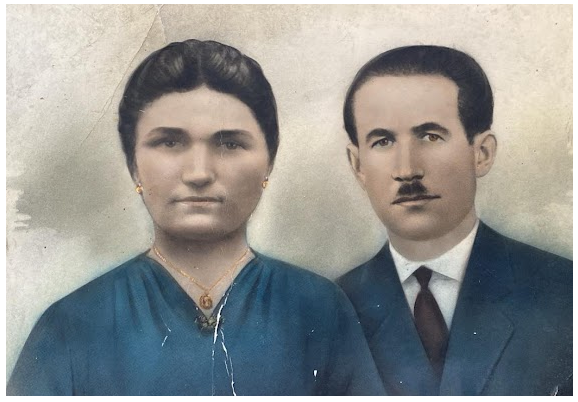
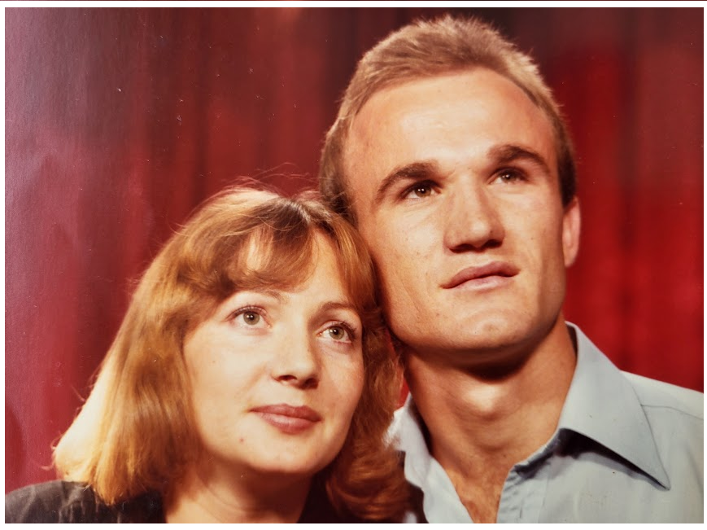
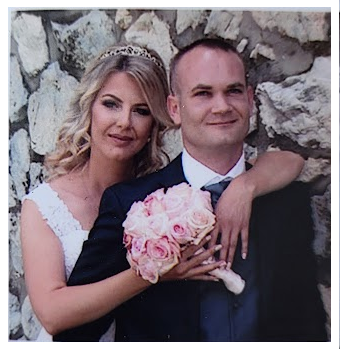
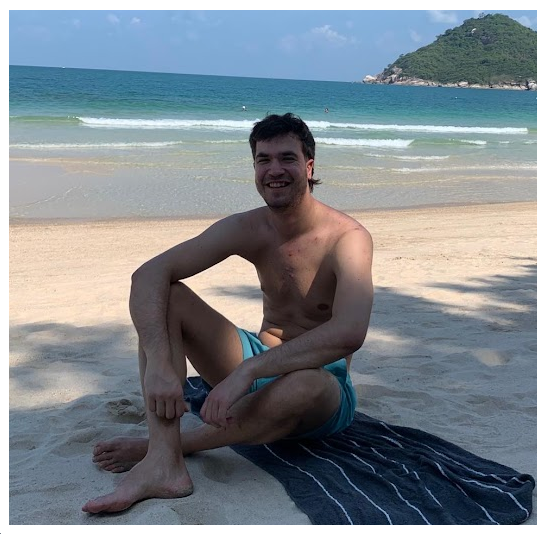
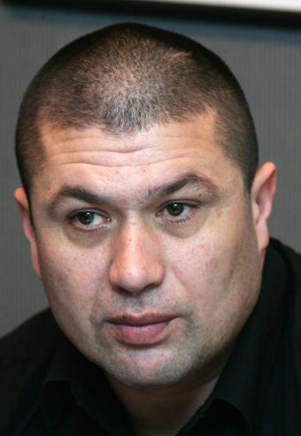
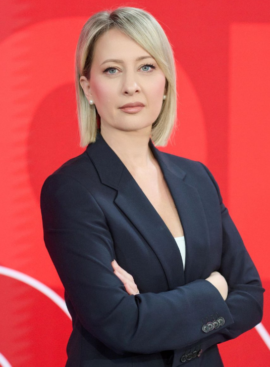

TREĆA GRANA PRVE OBITELJI TANDARA
3.0. Ante Tandara – Ivanov (rođen oko 1735.)
Ante Tandara treći je sin Ivana Tandare. Bio je otprilike godinu dana mlađi od Petra, što se dobro uklapa u poznati redoslijed Ivanove djece. Oženio se Matijom rođ. Brnas, s kojom je imao sinove Antu, Filipa i Pavla (1777.–) te kćeri Jaku (1771.–1837.), Lucu i Ružu. Osim zapisa o Pavlovu rođenju, nema drugih podataka o njemu, što upućuje na to da je vjerojatno umro vrlo mlad ili napustio Ričice prije nego što je ostavio trag u župnim knjigama. Antina loza ostala je čvrsto vezana uz Ričice, gdje se najjasnije razvijala tijekom 19. i 20. stoljeća. Iz ove jezgre potekao je najveći broj nositelja prezimena Tandara, pa se Antina linija smatra najrazvijenijom među Ivanovim potomcima. U kasnijim naraštajima pojedini članovi ove grane postupno su se počeli seliti – najprije u obližnja naselja, a zatim i mnogo dalje, u razne države Europske unije, kao i u Kanadu, Sjedinjene Američke Države i Australiju. Unatoč toj globalnoj raspršenosti, izvorna Antina linija ostala je čvrsto ukorijenjena u Ričicama, čuvajući kontinuitet obiteljske pripadnosti i najbogatiji pisani trag o svojim počecima.
PRVA PODGRANA ANTE ANTINA
3.1. Ante (1769.–1849.)
Ante, kao najstariji sin Ante Ivanova, oženio se 1801. godine Matijom Jukić. Imali su samo dva sina, Lovru i Miju, te kćeri Peru (1802.–), Ružu (1804.–), Anticu (1807.–), Ivu (1808.–), drugu Anticu (1814.–) i Mariju (1823.–). Obiteljsku su lozu nastavili sinovi Lovro i Mijo. Mijini su nasljednici dobili nadimak Tucići, dok su Lovrini nasljednici preko sina Marijana dobili nadimak Lovrinovići, a preko sina Križana – Križanovići.
Prema popisu iz 1819. godine, Ante je živio u Zavelimu, a njegov brat Filip u Ričicama. Njihovi su se potomci kasnije raselili po cijeloj Hrvatskoj, Europi, SAD-u i Kanadi.
3.1.1. Lovro Antin (1811.–1903.)
Oženio se Matijom rođ. Sičenica. Imali su sinove Marijana i Križana.
LOZA MARIJANA LOVRINA – LOVRINOVIĆI
3.1.1.1. Marijan Lovrin (1836.–)
Oženio se Matijom rođ. Kovač. Imali su sinove Juru (1867.–1869.), Marka, Stipana (1873.–) i Jozu te kćeri Ivu (–1869.), Maru (1871.–1872.) i Matiju (1880.–1880.). O Stipanu nema drugih podataka osim rođenja, pa se pretpostavlja da je umro mlad ili se odselio. Marijanovi potomci, preko sinova Marka i Jure, nose nadimak Lovrinovići, nastao po Marijanovu ocu Lovri. Lovrinovići danas žive u Popovači, Sarajevu, Stobreču i Londonu.
3.1.1.1.1. Marko Marijanov (1869.–)
Marko je oženio Božicu rođ. Pušić. Imali su sina Mirka i kćer Ivu (1897.–).
3.1.1.1.1.1. Mirko Markov (1901.–)
Mirko je oženio Anicu rođ. Kilić. Imali su sinove Milana i Vladimira (1948.–1962.), te kćeri Dragicu (1934.–), Mariju (1936.–) i Nediljku (1938.–). Obitelj se preselila u Popovaču.
3.1.1.1.1.1.1. Milan Mirkov (1939.–)
Milan je oženio Svjetlanu rođ. Trifunović. Dobili su sinove Vladimira i Dalibora. Obitelj se preselila u Sarajevo.
3.1.1.1.1.1.1.1. Vladimir Milanov (1969.–)
Vladimir je oženio Claire rođ. Tacher s kojom je dobio sina Alexandera Jamesa (2010.–) i kćer Sophie Elizabeth (2008.–). Obitelj se preselila u London u Ujedinjenom Kraljevstvu.
3.1.1.1.1.1.1.2. Dalibor Milanov (1970.–)
Dalibor je oženio Amelu rođ. Nezirović. Dobili su sina Damira i kćer Teu. Obitelj se preselila u Sarajevo.
3.1.1.1.2. Jozo Marijanov (1882.–1944.) – nadimak TROŠIĆI
Jozo je oženio Ivu rođ. Kovač. Dobili su sinove Marijana i Luku.
3.1.1.1.2.1. Marijan Jozin (1910.–1984.)
Marijan je oženio Anicu rođ. Budimir. Dobili su sinove Nikolu i Jozu (1942.–1948.) te kćeri Maru (1937.–) i Zorku (1942.–).
3.1.1.1.2.1.1. Nikola Marijanov (1939.–)
Nikola je oženio Mariju rođ. Lukić. Dobili su sina Vladu te kćeri Anu (1964.–), Marijanu (1965.–) i Radmilu (1967.–). Obitelj se preselila u Stobreč.
3.1.1.1.2.1.1.1. Vlade Nikolin (1970.–)
Vlade je oženio Silvanu rođ. Ruščić. Imaju sina Franu Josipa (1995.–) i kćer Teu (2000.–). Žive u Stobreču.
3.1.1.1.2.2. Luka Jozin (1912.–1987.)
Luka je oženio Anđu rođ. Kovač. Dobili su kćeri Ivu (1963.–), Maru (1967.–) i Zorku (1969.–). Muških potomaka nije imao.
LOZA KRIŽANA LOVRINA – KRIŽANOVIĆI
3.1.1.2. Križan Lovrin (1843.–1910.)
Oženio se Perom rođ. Budimir, s kojom je imao 15 djece, od toga deset sinova: Matu, Iliju (1867.–1875.), Antu, Jakova (1871.–1872.), Marijana (1873.–), Paška (–1886.), Jozu (1877.–), Ivana, Juru i Grgu (1887.–) te pet kćeri: Anicu (–1869.), Jakovicu (1868.–), drugu Anicu (1875.–1877.), Jozu (–1895.) i treću Anicu (1879.–). Sedmero Križanove djece umrlo je prije desete godine. Zanimljiv je podatak da je njegov drugi sin Ilija poginuo od uboda bika 1875. godine. Potomci Križana, preko sinova Mate, Ante, Ivana i Jure, nose nadimak Križanovići i žive u Zagrebu, Đakovu, Kutjevu, Bektežu, Strizivojni, Vrpolju i u nekoliko europskih država.
3.1.1.2.1. Mate Križanov (1866.–1948.)
Križanov najstariji sin Mate oženio se Ivom rođ. Pirić. Imali su sinove Miju (1894.–1923.), Marijana i Jozu, te kćeri Maru (1938.–) i Matiju (1898.–1906.). Mijo se nikada nije oženio. Obitelj se preselila u Bektež kraj Kutjeva.
3.1.1.2.1.1. Marijan Matin (1902.–1974.)
Marijan je oženio Anicu rođ. Maras. Dobili su sinove Antu, Jozu (1941.–2002.), Matu i Ivana te kćer Maru (1938.–). Jozo se nije ženio. Obitelj živi u Bektežu kraj Kutjeva.
3.1.1.2.1.1.1. Ante Marijanov (1934.–)
Ante Marijanov je imao dva braka. U prvom braku s Elizabetom rođ. Miletić imao je sina Darka (1958.–) i kćer Gordanu (1960.–). U drugom braku s Anom rođ. Kajtar nije imao djece. Obitelj se preselila u Strizivojnu.
3.1.1.2.1.1.1.1. Darko Antin (1958.–)
Darko Antin imao je dva braka. U prvom braku s Angelom ima sinove Marija (1982.–) i Markusa (1987.–). U drugom braku sa Suzanom ima sina Klausa Antu (2006.–). Darko sa svojom obitelji živi u Njemačkoj.
3.1.1.2.1.1.2. Mato Marijanov (1945.–)
U braku s Anicom rođ. Bogdanović dobio je sina Alena (1969.–) i kćer Lauru (1976.–). Obitelj se preselila u Strizivojnu.
3.1.1.2.1.1.2.1. Alen Matin (1969.–)
Alen je oženio Melitu rođ. Pjela, s kojom je dobio sina Marina (1993.–) i kćer Enu (1996.–). Obitelj živi u Strizivojni.
3.1.1.2.1.1.3. Ivan Marijanov (1953.–)
Marijanov četvrti sin Ivan oženio se Ljiljanom rođ. Cobović. Dobili su sina Marijana (1987.–) te kćeri Lanu (1982.–) i Paulinu (1987.–). Žive u Đakovu, gdje Ivan vodi vlastiti odvjetnički ured.
3.1.1.2.1.2. Jozo Matin (1904.–1944.)
Najmlađi sin Mate i Ive Pirić oženio se Jakom rođ. Kilić. Dobili su sinove Miju, Jozu i Ivana (1945.–) te kćer Maru (1938.–). Ivan se nije ženio. Jozo Matin poginuo je u Drugom svjetskom ratu. Mijina obitelj danas živi u Bektežu kraj Kutjeva, a Jozina obitelj u Velenju u Sloveniji.
3.1.1.2.1.2.1. Mijo Jozin (1940.–)
Mijo je oženio Zoricu, s kojom ima tri kćeri: Marijanu, Nikolinu i treću kćer čije ime nije poznato. Obitelj živi u Bektežu kraj Kutjeva i bavi se proizvodnjom vina. Riječ je o poznatoj vinarskoj obitelji s istoimenim vinskim brendom Tandara.
3.1.1.2.1.2.2. Jozo Jozin (1943.–)
Jozo i supruga nepoznatog imena dobili su sina Marijana i kćer Romanu. Obitelj se preselila u Velenje u Sloveniji.
3.1.1.2.1.2.2.1. Marijan Jozin
Marijan Jozin i supruga Marinela imaju sina Martina te kćeri Tamaru i Petriciju. Obitelj živi u Velenju u Sloveniji.
3.1.1.2.2. Ante Križanov (1870.–1945.)
Treći sin Križana Lovrina, Ante, oženio se Ivom rođ. Trogrlić. Imali su sina Stipana (1898.–) te kćeri Jelu i Maru. Stipan se nakon Prvoga svjetskog rata, 1918. godine, preselio u Srbiju. Nije poznato je li imao potomke niti što se s njim kasnije dogodilo.
3.1.1.2.3. Ivan Križanov (1881.–1920.)
Ivan je bio osmi Križanov sin. Oženio se Ružom rođ. Serdarušić, s kojom je imao sinove Antu (1911.–1916.), Križana i Marijana (1914.–1916.), koji je umro kao dijete, te kćeri Maru (1909.–) i Anu.
3.1.1.2.3.1. Križan Ivanov (1916.–1944.)
U braku s Maricom rođ. Pušić imao je sina Ivana. Križan je poginuo u Zagrebu 1944. godine. Obitelj živi u Vrpolju.
3.1.1.2.3.1.1. Ivan Križanov (1938.–2007.)
Ivan Križanov se dvaput ženio. Iz prvog braka s Dragicom rođ. Dragun dobio je sina Križana (1956.–). U drugom braku s Ankom rođ. Nikolić ima kćeri Biljanu (1963.–) i Belinu (1969.–).
3.1.1.2.3.1.1.1. Križan Ivanov (1956.–)
Križan i supruga Ljerka rođ. Maričić dobili su sinove Tonija (1979.–) i Dinka (1983.–). Obitelj živi u Vrpolju.
3.1.1.2.3.1.1.1.1. Toni Križanov (1979.–)
Toni i supruga Nada rođ. Jergović dobili su kćeri Veroniku i Magdalenu te sina Filipa. Obitelj živi u Vrpolju.
3.1.1.2.4. Jure Križanov (1883.–1947.) – nadimak Đulko
Bio je deveti sin Križana Lovrina i ženio se tri puta. Po pradjedu Juri, zvanom Đulko, njegovi potomci nose uži obiteljski nadimak Đulkići, unutar ogranka Križanovići. U prvom braku bio je oženjen Perom rođ. Matišić (šifra 3.1.1.2.4-SP-1) i dobio sina Josipa (3.1.1.2.4.1). Pera je umrla 1919. od španjolske gripe. Druga supruga bila je nepoznatog imena, rođ. Budić (3.1.1.2.4-SP-2); imali su sina Martina (1920.–1942.; 3.1.1.2.4-S1). Treća supruga bila je Joza rođ. Dragun (3.1.1.2.4-SP-3); nisu imali djece.
3.1.1.2.4-S1. Martin Jurin (1920.–1942.)
3.1.1.2.4.1. Josip Jurin (1911.–1946.)

Josip je bio oženjen Anicom rođ. Dragun (3.1.1.2.4.1-SP-1). Imali su osmero djece: sinove Ivana (1933.–2025.), Milana (1942.–2003.) i Martina (1946.–1947.; 3.1.1.2.4.1-S1) te kćeri Slavu (1935.–1977.; 3.1.1.2.4.1-K1), Maru (1936.–2012.; 3.1.1.2.4.1-K2), Nedu (1939.–2025.; 3.1.1.2.4.1-K3), Matiju, zvanu Maca (rođenu 1940.; 3.1.1.2.4.1-K4) i Zlatu (1944.–1945.; 3.1.1.2.4.1-K5).
Josip je 1946. tragično ubijen. Prema obiteljskom svjedočenju, o događaju je postojao iskaz neposrednog svjedoka iznesen Anici pred njegovu smrt. Zbog poratnih okolnosti, nesređenih društvenih odnosa i manipuliranja informacijama slučaj nije sudski procesuiran. U javnom prikazu ne navode se imena navodnih organizatora ili počinitelja; događaj se iznosi kao obiteljsko svjedočenje, a ne kao sudski utvrđena činjenica.
3.1.1.2.4.1.1. Ivan Josipov (1933.–2025.)
Dvaput se ženio. Iz prvog braka s Matijom rođ. Pušić dobio je sinove Juru i Vladimira te kćer Mihaelu, krštenu kao Milena (1959.–). Iz drugog braka s Verkom rođ. Nikolovski nije imao djece. Obitelj živi u Zagrebu.
3.1.1.2.4.1.1.1. Jure Ivanov (1956.–)

Jure i Ruža rođ. Kosić dobili su sinove Ivicu Julija i Marina Tina. Obitelj živi u Zagrebu.
3.1.1.2.4.1.1.1.1. Ivica Julio Jurin (1981.–)
Ivica Julio oženio se Anom rođ. Mikuš, s kojom je dobio sina Viga (2015.–) i kćer Kaiju (2018.–).
3.1.1.2.4.1.1.1.2. Marin Tin Jurin (1983.–)

Marin Tin oženio se Ivanom rođ. Kereta, s kojom je dobio sinove Davida (2017.–) i Jakova (2019.–) te kćer Lauru (2023.–).
3.1.1.2.4.1.1.2. Vladimir Ivanov (1964.–)
Vladimir je oženio Ljubicu rođ. Kosić s kojom ima sinove Filipa (1995.) i Lea (1997.). Obitelj živi u Münchenu. Filip živi u Berlinu, a Leo u Beču.
3.1.1.2.4.1.1.2-S1. Filip Vladimirov (1995.–)

3.1.1.2.4.1.1.2-S2. Leo Vladimirov (1997.–)
3.1.1.2.4.1.2. Milan Josipov (1942.–2003.)
Milan je oženio Slavku rođ. Budimir i s njom je dobio sinove Jozu i Ivana te kćeri Mariju (1965.–), Anku (1970.–) i Marinu (1973.–). Obitelj živi u Posušju. Ivan živi u Bielefeldu u Njemačkoj.
3.1.1.2.4.1.2.1. Jozo Milanov (1967.–)
Jozo je oženio Vesnu rođ. Matić s kojom ima sina Martina (2003.) te kćeri Slavicu (1997.) i Mateu (1999.). Martin živi u Posušju.
3.1.1.2.4.1.2.1.1. Matea Jozina (1999.–)
Matea Jozina dobila je sina Tomu. Toma je preuzeo naše prezime Tandara. To je prvi slučaj u obitelji Tandara da je kćer nastavila očevu lozu. Obitelj živi u Posušju.
3.1.1.2.4.1.2.2. Ivan Milanov (1974.–)
Ivan je oženjen Ružicom rođ. Glavaš i s njom ima sinove Davida i Milana (2003.–) te kćer Nataliju (2000.–). Obitelj živi u Bielefeldu u Njemačkoj.
3.1.1.2.4.1.2.2.1. David Ivanov (1995.–)
David je oženjen Lizom rođ. Wörmann i s njom ima kćer Ivanu (2024.). Obitelj živi u Bielefeldu u Njemačkoj.
3.1.1.2.4.1-K4. Matija (Maca) Josipova Tandara, udana Budimir (rođena 1940.)

Matija, zvana Maca, kći je Josipa Jurina Tandare i Anice rođ. Dragun. Udala se za Antu Budimira, s kojim je dobila sinove Jozu, Ivicu, Mirka i Marija. Obitelj živi u Splitu.
3.1.1.2.4.1-K5. Zlata Josipova (1944.–1945.)
Zlata je bila kći Josipa Jurina Tandare i Anice rođ. Dragun. Umrla je 1945. godine.
3.1.1.2.4.1-S1. Martin Josipov (1946.–1947.)
Martin je bio sin Josipa Jurina Tandare i Anice rođ. Dragun. Umro je 1947. godine.
3.1.2. Mijo Antin (1818.–1878.) – nadimak Tucići
Mijo, drugi Antin sin, oženio se Mandom rođ. Martinović. Imali su devetero djece: sinove Jozu, Antu (1852.–), Matu, Miju (1865.–) i Petra te kćeri Ivu (1856.–), Matiju (1858.–), Ružu (1859.–) i Anticu (1861.–).
O sinu Miji nema drugih podataka osim rođenja. Pretpostavlja se da je umro mlad ili se odselio u nepoznatom smjeru. Potomci preko sinova Joze, Mate i Petra nose nadimak Tucići, koji je nastao jer su članovi obitelji bili skloni ljubavnim avanturama.
LOZA JOZE MIJINA
3.1.2.1. Jozo Mijin (1851.–)
Jozo se oženio Ivom rođ. Bilojelić. Imali su sedmero djece: sinove Antu, Jozu (1884.–) i Nikolu (1889.–1895.), te kćeri Matiju (1880.–), Jelu (1885.–), Maru (1895.–) i Ivu (1898.–). Sin Jozo nije se ženio, a jedino je Ante prenio prezime na potomke.
3.1.2.1.1. Ante Jozin (1881.–1942.)
Oženio se Jelom rođ. Škorić. Imali su sinove Marijana, Matu (1920.–), Pilipa (1926.–1926.) i Miju te kćeri Jelu (1912.–), Maru (1915.–1915.), Katu (1922.–) i Milu (1925.–). Obiteljsku su lozu nastavili sinovi Marijan i Mijo.
3.1.2.1.1.1. Marijan Antin (1908.–2003.) – nadimak Đika
Marijan je oženio Ivu rođ. Čorbić. Dobili su sinove Ivana i Milana te kćeri Maru (1935.–), Dragicu (1941.–), Katu (1948.–) i Mariju (1951.–).
3.1.2.1.1.1.1. Ivan Marijanov (1939.–2024.)
Ivan se oženio Anom rođ. Pušić. Dobili su sina Zdenka (1966.–) i kćer Kristinu (1968.–). Obitelj živi u Zagrebu.
3.1.2.1.1.1.1.1. Zdenko Ivanov
Zdenko se ženio dvaput. Iz prvog braka ima sina Tomislava, a iz drugog braka s Kristinom rođ. Topić ima kćer Anu.
3.1.2.1.1.1.2. Milan Marijanov (1947.–)
Dvaput se ženio. Iz prvog braka s Marijom rođ. Pušić ima sina Nedjeljka te kćeri Dragicu (1968.–), Ljubicu (1970.–) i Tanju (1971.–). Iz drugog braka Milan nema djece.
3.1.2.1.1.1.2.1. Nedjeljko Milanov (1966.–)
Nedjeljko i supruga Ivana rođ. Božičević imaju kćeri Mariju (1996.–) i Tinu (1998.–). Obitelj živi u Zagrebu.
3.1.2.1.1.2. Mijo Antin (1927.–)
Četvrti Antin sin Mijo oženio se Mašom rođ. Gudelj, s kojom je dobio sina Antu. Obitelj živi u Zagrebu.
3.1.2.1.1.2.1. Ante Mijin (1953.–)
Ante je oženio Renatu rođ. Nagy s kojom je dobio sina Antu. Žive u Zagrebu.
3.1.2.1.1.2.1.1. Ante Antin (1978.–)
Ante je oženio Valentinu rođ. Juriša s kojom je dobio sinove Antu i Luku. Žive u Zagrebu.
LOZA MATE MIJINA
3.1.2.2. Mate Mijin (1864.–1905.)
Mate se ženio dva puta. U prvom braku s Tomicom rođ. Kovač imao je sina Ivana (1888.–1895.). U drugom braku s Ivom rođ. Vlajčić imao je kćer Ivu (1897.–1914.) i sinove Martina (–1927.) i Juru. Nema podataka o tome je li se Martin ženio.
3.1.2.2.1. Jure Matin (1905.–1974.) – nadimak ĐUKA
Jure je oženio Matiju rođ. Škorić s kojom je dobio sinove Antu i Matu te kćeri Milu (1926.–), Stanu (1930.–) i Ivu (1937.–).
3.1.2.2.1.1. Ante Jurin (1933.–1999.)
Ante je oženio Milu rođ. Đikić s kojom je dobio sinove Ivana (1957.–2002.), Milana i Srećka te kćer Matiju (1965.–). Obitelj se preselila u Đakovo.
3.1.2.2.1.1.1. Milan Antin (1958.–1995.)
Milan je oženio Marijanu rođ. Erceg s kojom je dobio sinove Ivana i Antu. Obitelj živi u Đakovu.
3.1.2.2.1.1.1.1. Ivan Milanov (1983.–)
Ivan je oženio Sunčicu rođ. Kraljević s kojom je dobio sina Marina (2008.–). Obitelj živi u Đakovu.
3.1.2.2.1.1.1.2. Ante Milanov (1985.–)
Ante je oženio Anu rođ. Stipanović s kojom je dobio sina Milana (2010.–). Obitelj živi u Đakovu.
3.1.2.2.1.1.2. Srećko Antin (1959.–)
Srećko je oženio Jaku rođ. Jurić i s njom dobio sinove Antonija (1995.–) i Marka (1996.–). Obitelj živi u Đakovu.
3.1.2.2.1.2. Mate Jurin (1935.–)
Mate je oženio Danicu rođ. Malenica, s kojom je dobio sina Tomislava i kćeri Mariju (1960.–), Milu (1962.–) i Anu (1964.–). Obitelj živi u Podstrani kraj Splita.
3.1.2.2.1.2.1. Tomislav Matin (1968.–)
Tomislav je oženio Vlatku rođ. Dolić, s kojom ima sina Mateja (1998.–) i kćer Danielu (1997.–). Žive u Podstrani kraj Splita.
LOZA PETRA MIJINA
3.1.2.3. Petar Mijin (1867.–)
Petar je bio oženjen Matijom rođ. Tandara s kojom je dobio sinove Matu, Stipana, Antu (1911.–1911.) i Iliju te kćer Anđu (1911.–1911.).
3.1.2.3.1. Mate Petrov (1902.–1991.)
Mate je bio oženjen Katom rođ. Cimerman, s kojom je dobio sina Ivana i kćer Ankicu (1931.–). Obitelj se preselila u Kutjevo.
3.1.2.3.1.1. Ivan Matin (1932.–2005.)
Ivan se oženio Pavicom rođ. Kralik, s kojom je imao sinove Emila i Ivana (1978.–). Obitelj živi u Kutjevu.
3.1.2.3.1.1.1. Emil Ivanov (1963.–)
Emil se oženio Zoricom rođ. Nađ, s kojom ima kćeri Marijanu (1986.–) i Nikolinu (1993.–). Obitelj živi u Švicarskoj.
3.1.2.3.2. Stipan Petrov (1908.–1989.)
Stipan je oženio Jozu rođ. Malenica s kojom je dobio sina Ivana i kćer Ankicu (1946.–). Obitelj se preselila u Dugo Selo.
3.1.2.3.2.1. Ivan Stipanov (1944.–)
Ivan je oženio Anu rođ. Budimir s kojom ima sina Mirka i kćeri Mirjanu (1968.–), Mariju (1971.–) i Ankicu (1973.–). Obitelj živi u Dugom Selu.
3.1.2.3.2.1.1. Mirko Ivanov (1966.–)
Mirko je oženio Dragicu rođ. Čamber s kojom ima sinove Ivana (1996.–) i Josipa (1998.–) te kćer Anu Mariju (1994.–).
3.1.2.3.3. Ilija Petrov (1912.–2006.) – nadimak GRABUNJAŠ
Ilija je bio oženjen Anicom rođ. Škorić, s kojom je dobio sinove Marijana i Mirka te kćeri Macu (1942.–), Nedu (1944.–) i Dragicu (1955.–).
3.1.2.3.3.1. Marijan Ilijin (1939.–) – nadimak Marinko
Marijan je oženio Franku rođ. Kovač, s kojom je dobio sinove Nediljka (1961.–1961.) i Mirču te kćeri Ivanku (1963.–), Mariju (1965.–) i Nedu (1966.–). Obitelj živi u Đakovu.
3.1.2.3.3.2. Mirko Ilijin (1945.–2025.)
Mirko je bio oženjen Katom rođ. Kovač, s kojom je dobio sinove Marinka, Ivicu i Antu te kćeri Anku (1975.–) i Mariju (1982.–). Obitelj živi u Zagrebu.
3.1.2.3.3.2.1. Marinko Mirkov (1967.–)
Marinko je oženio Jaroslavu rođ. Doležal, s kojom ima sina Petra (1991.–) i kćeri Kristinu (1994.–) i Antoniju (1996.–). Obitelj živi u Zagrebu.
3.1.2.3.3.2.2. Ivica Mirkov (1967.–)
Ivica je oženio Ružu rođ. Valjak s kojom ima kćeri Helenu (1993.–) i Katarinu (1994.–). Žive u Zagrebu.
3.1.2.3.3.2.3. Ante Mirkov (1967.–)
Ante je oženio Ružicu rođ. Čolak, s kojom ima kćeri Gabrielu (1995.–), Antonelu (1997.–) i Paulu (2000.–). Ante je predsjednik HVIDR-e Grada Zagreba. Obitelj živi u Zagrebu.

DRUGA PODGRANA FILIPA ANTINA
3.2. Filip Antin
Filip je bio drugi sin Ante Ivanova. Za razliku od njegova brata Ante, Filip je ostao i nastavio život u Ričicama. Bio je oženjen Matijom rođ. Parlov, s kojom je imao sinove Martina, Matu (1814.–) i Ivana (1823.–), te kćeri Jozu, Jelu, Jurku (1811.–), Anticu i Ružu (1821.–1822.). Za Ivana i Matu postoje samo podaci o rođenju, pa se pretpostavlja da su mladi umrli ili su odselili iz Ričica.
3.2.1. Martin Filipov (1811.–)
Martin je bio oženjen Mandom rođ. Manenica, s kojom je imao sinove Jerku, Iliju, Ivana (1847.–1851.), Martina (–1853.) i još jednog Ivana (1852.–), te kćeri Tomicu (–1870.), Luciju (1845.–), drugu Luciju (1850.–) i Ivu (1854.–). Lozu su nastavili samo sinovi Jerko i Ilija.
LOZA JERKA MARTINOVA
3.2.1.1. Jerko Martinov (1839.–)
Jerko je bio oženjen Ivom rođ. Topalušić s kojom je dobio sinove Martina, Luku (1869.–1869.) i Ivana (1872.–).
3.2.1.1.1. Martin Jerkin (1865.–)
Martin je bio oženjen Ivom rođ. Kovač s kojom je imao kćeri Matiju (1893.–), Maru (1895.–1899.) i Ivu (1905.–).
3.2.1.1.2. Ivan Jerkin (1872.–)
Ivan je bio oženjen Jakom rođ. Martinović s kojom je imao sinove Matu i Martina te kćeri Anu (1900.–), Tomicu (1907.–1908.) i drugu Tomicu (1910.–), nakon što je prva kćer Tomica preminula u drugoj godini života. Često se događalo da roditelji, nakon smrti prvog djeteta, sljedećem djetetu istog spola daju isto ime.
3.2.1.1.2.1. Mate Ivanov (1898.–) – nadimak Pikići
Mate je bio oženjen Matijom rođ. Lažeta, s kojom je imao sinove Nikolu, Mirka i Marijana te kćeri Milicu (1929.–) i Dragicu (1934.–). Obitelj se preselila u Split.
3.2.1.1.2.1.1. Nikola Matin (1927.–1990.)
Nikola je bio oženjen Matijom rođ. Kilić s kojom je dobio sinove Damira i Željka te kćeri Veru i Mariju. Obitelj živi u Splitu.
3.2.1.1.2.1.1.1. Damir Nikolin (1960.–)
Damir se dva puta ženio. Iz prvog braka s Marinom rođ. Čelan ima sina Tina (1981.–), koji živi u Njemačkoj. U drugom braku s Lucijom rođ. Modrić ima sina Lea (2003.–) i kćeri Žanu (1988.–) i Doris (1998.–). Obitelj živi u Splitu.
3.2.1.1.2.1.1.2. Željko Nikolin (1963.–)
Željko je oženjen Anitom rođ. Košćak s kojom ima sinove Nikolu (1992.–) i Marka (1996.–). Žive u Splitu.
3.2.1.1.2.1.2. Mirko Matin (1932.–2005.)
Mirko je bio oženjen Anđelkom Dragicom rođ. Mršić s kojom je dobio sinove Nedjeljka, Zdravka i Miroslava. Obitelj živi u Splitu.
3.2.1.1.2.1.2.1. Nedjeljko Mirkin (1957.–)
Nedjeljko je oženjen Danicom rođ. Jaginović s kojom ima sinove Mirka (1991.–), Ivana (1996.–) i Križana (2003.–). Obitelj živi u Splitu.
3.2.1.1.2.1.2.2. Zdravko Mirkin (1960.–)
Zdravko je oženjen Dubravkom rođ. Brajković s kojom ima sinove Antu (1993.–) i Vedrana (1995.–). Obitelj živi u Splitu.
3.2.1.1.2.1.2.3. Miroslav Mirkin (1963.–)
Miroslav je oženjen Ružicom rođ. Krajinović s kojom ima sina Josipa (1995.–) i kćeri Ines i Anu. Obitelj živi u Splitu.
3.2.1.1.2.1.3. Marijan Matin (1936.–)
Marijan je oženio Maru rođ. Tandara s kojom ima sina Matu i kćer Snježanu (1968.–). Obitelj živi u Splitu.
3.2.1.1.2.1.3.1. Mate Marijanov (1961.–)
Mate je oženio Zdravku rođ. Guć s kojom je dobio sinove Marijana (1985.–), Ivana (1987.–) i Antu (1998.–). Obitelj živi u Splitu.
3.2.1.1.2.2. Martin Ivanov (1904.–)
Martin je bio oženjen Anicom rođ. Lekić s kojom je dobio sinove Ivana, Jerku i Marijana (1939.–1941.) te kćeri Maru (1937.–1942.) i Matiju (1942.–1942.). Obitelj se preselila u Bjelovar.
3.2.1.1.2.2.1. Ivan Martinov (1932.–1996.)
Ivan je bio oženjen Anom rođ. Radmanić s kojom je dobio sina Darka. Obitelj živi u Bjelovaru.
3.2.1.1.2.2.1.1. Darko Ivanov (1955.–)
Darko je oženio Dragicu rođ. Sabolović s kojom je dobio sina Ivana (1983.–) i kćer Moniku (1992.–). Obitelj živi u Bjelovaru.
3.2.1.1.2.2.2. Jerko Martinov (1935.–)
Jerko je oženio Ružicu rođ. Seketić s kojom je dobio sina Renata. Obitelj živi u Borovu Naselju.
3.2.1.1.2.2.2.1. Renato Jerkin (1964.–)
Renato je oženio Tanju rođ. Lancoš s kojom ima kćer Leu (1998.–). Obitelj se preselila u Zagreb.
LOZA ILIJE MARTINOVA
3.2.1.2. Ilija Martinov (1843.–)
Ilija je bio oženjen Lucom rođ. Tavra s kojom je imao sinove Matu, Ivana (1877.–1883.) i Šimuna (1880.–1880.), te kćeri Tomicu (1881.–1882.), drugu Tomicu (1884.–), Ivu (1886.–1886.) i Maru (1887.–1888.). Ivan je preminuo u šestoj godini života, a Šimun ubrzo nakon rođenja.
3.2.1.2.1. Mate Ilijin (1875.–) – začetnik ogranka Rumići
Mate je bio oženjen Marom rođ. Topalušić, s kojom je imao sinove Ivana (1899.–), Božu (1902.–), Miju (1909.–1945.) i Tomu, čije godine nisu dostupne, te kćeri Tomicu (1900.–), Maru (1906.–) i drugu Maru (1912.–). Mate je u mladosti zbog rumena lica dobio nadimak Rumić, a svi njegovi potomci nose obiteljski nadimak Rumići. Za Ivana i Božu postoje samo zapisi o rođenju; njihova daljnja sudbina, bračno stanje i mogući potomci nisu poznati, pa njihove linije ostaju otvorene.
3.2.1.2.1.1. Ivan Matin (1899.–)
Postoji samo zapis o Ivanovu rođenju. Njegova daljnja sudbina, bračno stanje i mogući potomci nisu poznati.
3.2.1.2.1.2. Božo Matin (1902.–)
Postoji samo zapis o Božinu rođenju. Njegova daljnja sudbina, bračno stanje i mogući potomci nisu poznati.
3.2.1.2.1.3. Mijo Matin (1909.–1945.) – Rumići
Mijo je bio oženjen Jozom rođ. Štrljić s kojom je dobio sinove Vinka i Milana. Obitelj se preselila u Predavac kod Bjelovara.
3.2.1.2.1.3.1. Vinko Mijin (1932.–)
Vinko se ženio dva puta. U prvom braku s Krstom rođ. Mršić dobio je sinove Miju, Antu, Milana, Zdravka i Vinka. U drugom braku s Matijom rođ. Sičenica nije imao djece. Obitelj živi u Predavcu kod Bjelovara.
3.2.1.2.1.3.1.1. Mijo Vinkov (1952.–)
Mijo je oženio Jelu rođ. Krezo s kojom ima sinove Ivicu i Zorana (1983.–). Zoran se nije ženio. Mijo živi s obitelji u Njemačkoj.
3.2.1.2.1.3.1.1.1. Ivica Mijin (1975.–)
Ivica je oženio Vesnu rođ. Belan s kojom ima sinove Luku (2002.–) i Miju (2007.–). Obitelj živi u Njemačkoj.
3.2.1.2.1.3.1.2. Ante Vinkov (1954.–)
Ante je oženio Vesnu rođ. Topalušić s kojom ima kćeri Kristinu (1977.–), Marinu (1980.–) i Nikolinu (1987.–). Muških potomaka nema. Obitelj živi u Njemačkoj.
3.2.1.2.1.3.1.3. Milan Vinkov (1957.–)
Milan je oženio Nediljku rođ. Matešić, s kojom ima sinove Kristijana (1985.–), Antonija (1987.–) i Dina (1991.–) te kćer Valentinu (1999.–). Obitelj živi u Predavcu.
3.2.1.2.1.3.1.4. Zdravko Vinkov (1960.–)
Zdravko je oženio Brigitu rođ. Horvatinčić s kojom ima sinove Matu (1997.–) i Brunu (1999.–) te kćeri Anitu (1993.–) i Petru (2003.–). Obitelj živi u Predavcu.
3.2.1.2.1.3.1.5. Vinko Vinkov (1961.–)
Vinko je oženio Slavicu rođ. Matišić, s kojom ima sina Marija (1984.–) i kćer Marinu (1995.–). Obitelj živi u Predavcu.
3.2.1.2.1.3.2. Milan Mijin (1935.–)
Milan je oženio Ivu rođ. Lukić, s kojom ima sinove Željka i Dragana te kćeri Rosu (1959.–) i Dragicu (1961.–). Obitelj živi u Predavcu.
3.2.1.2.1.3.2.1. Željko Milanov (1962.–)
Željko je oženio Slađanu nepoznatog prezimena i s njom ima sina Ivana (nepoznata godina rođenja). Obitelj živi u Predavcu.
3.2.1.2.1.3.2.2. Dragan Milanov (1965.–)
Dragan je oženio Zvijezdanu (nepoznatog prezimena) i s njom ima sina Gorana i kćeri Ivu i Danielu. Obitelj živi u Predavcu.
3.2.1.2.1.3.2.2.1. Goran Draganov (godina rođenja nije dostupna)
Goran ima sina Tina. Ostali podaci nedostaju. Obitelj živi u Predavcu.
3.2.1.2.1.4. Toma Matin (godine nisu dostupne) – Rumići
Toma je bio oženjen Tomicom rođ. Tandara, s kojom je dobio sinove Petra, Marijana (1926.–), Slavka, Antu i Matu te kćeri Milu (1931.–), Dragicu (1937.–), Anu (1939.–) i Nevenku (1946.–). Marijan se nije ženio.
3.2.1.2.1.4.1. Petar Tomin (1925.–1985.)
Petar je bio oženjen Katom rođ. Novosel s kojom je dobio sina Ivicu.
3.2.1.2.1.4.1.1. Ivica Petrov (1952.–)
Ivica je oženio Ljubicu rođ. Kozić s kojom ima sina Hrvoja (1983.–), koji se nije ženio i nema djece, te kćer Sabinu Tandara Knezović (1978.–). Sabina je poznata TV novinarka koja radi na Novoj TV. Obitelj živi u Zagrebu.

3.2.1.2.1.4.2. Slavko Tomin (1930.–2006.)
Slavko je bio oženjen Savkom rođ. Vukobratović s kojom je dobio sina Marka (1981.–). Marko se nije ženio. Obitelj živi u Zagrebu.
3.2.1.2.1.4.3. Ante Tomin (1942.–2011.)
Ante je bio oženjen Zlatom rođ. Vučemil s kojom je dobio sina Draženka. Obitelj živi u Sredicama kod Bjelovara.
3.2.1.2.1.4.3.1. Draženko Antin (1967.–)
Draženko je oženio Nedu rođ. Medić s kojom ima sina Luku (1998.–) i kćeri Maju (1988.–) i Mateu (1992.–). Obitelj živi u Sredicama kod Bjelovara.
3.2.1.2.1.4.4. Mate Tomin (1944.–2007.)
Mate je bio oženjen Tonkom rođ. Vukičević s kojom je dobio sina Željka. Obitelj živi u Zagrebu.
3.2.1.2.1.4.4.1. Željko Matin (1953.–)
Željko je oženio Ankicu rođ. Šitum, s kojom ima sinove Marija i Ivana Vanju. Željko s obitelji živi u Kanadi.
Napomena: Rodoslovni podaci nadopunjuju se nakon provjere novih podataka i izvora.
Uz tekstualni dio nalazi se i grafički prikaz koji se otvara klikom na aktivne pravokutnike u dijagramu na desnoj strani početne stranice.


Interaktivni dijagram Antine grane
Otvorite pripadajući interaktivni rodoslovni dijagram ove obiteljske grane.
Napomena
Kompletno rodoslovno stablo ove obiteljske grane nalazi se u desnom interaktivnom dijagramu na početnoj stranici Digitalnog arhiva roda Tandara.
Na početnoj stranici odaberite klikabilni okvir pod nazivom „Antina grana”. Klikom na taj okvir otvara se odgovarajući dio rodoslovnog stabla s potomcima ove grane.